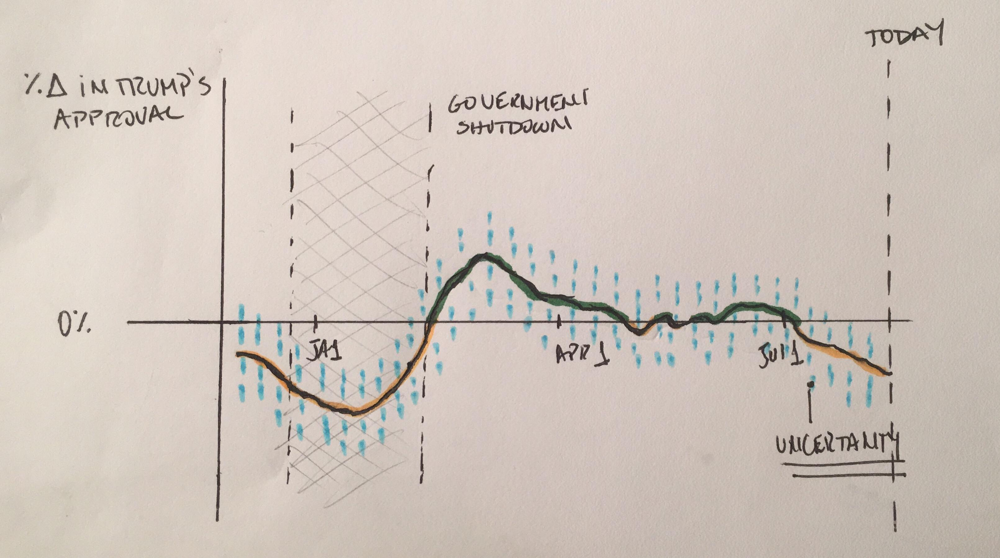
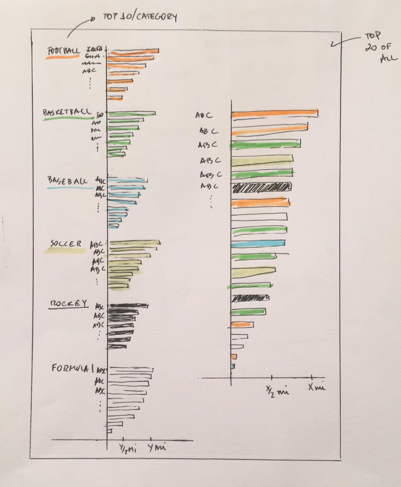
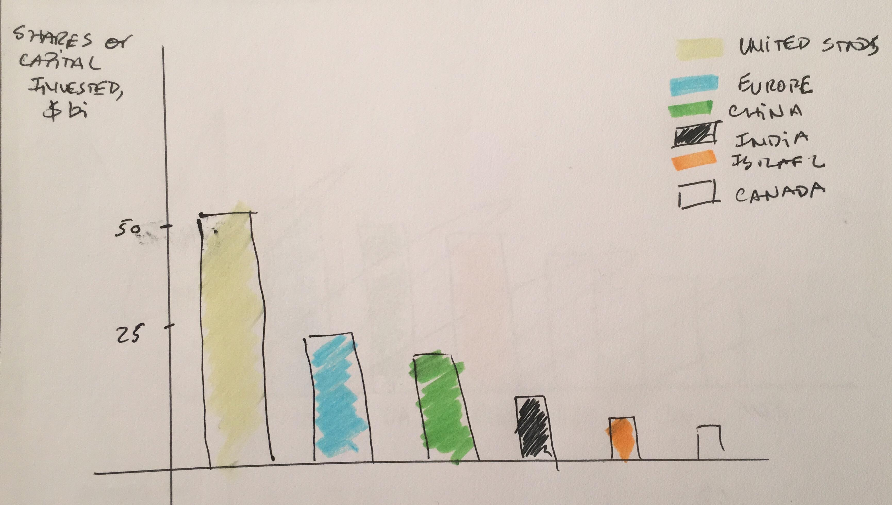

Awesome Visualization Examples
How to build a Human
This graph is likely directed to a more scientific/student audience for its level of details (name of all formation stages etc) and content. In it, the author aims to inform the reader about all phases of human formation. To do so, he/she encoded the content, complete pregnancy cycle, using a spiral timeline (numbers measure weeks since fecundation) with background colors segmenting different cell locations, drawings to show cell development up to human and text naming all stages. This work is a great visualization for it is one of the most beautiful, insightful, functional, enlightening and truthful visualization I have ever come across. Firstly, the picture is well balanced (the spiral timeline dimension makes everything fall in place) and, although the author mixed cold and warm colors, the visualization still looks pleasant (and calm) to look at – there is no unnecessary visual noise. It is insightful and functional because one can quickly look at the picture and understand all stages of pregnancy, their names and how long do each take – the author was able to transform a whole college-book chapter into one single visualization. Lastly, It is enlightening and truthful because, as we learned in class, we grasp and accept the evidence it depicts.
Politicians' salaries and Income Inequality
This is a very smart visualization for it has a great load of well though/represented content. Firstly, the audience for this work is likely formed of judges (competition) and visualization experts (or even students seeing it in textbooks) for its level of artistic representation and content – it tells us an inequality story. In it, the author focuses on conveying the extreme inequality, in poor countries, between government employees and the rest of the population. The author does so by comparing the height of a politician to that of a person (by country) and attaching the gini coefficient to body fat - therefore the data is mostly encoded by height differences and physical shape of the politicians. I consider this visualization to be beautiful, for, although there is so much information being “told” to the reader, the work still looks minimalistic, creative, organized and pleasant to look to (great color and font choice); insightful, functional and enlightening because one can quickly understand the story behind the work without question and do so based on comparing distances; and truthful for respecting data scale.
The curios case of Equatorial Guinea: an outlier in outliers
The audience for this work is possibly general public (with maybe a scientist-researcher touch due to its content) for its simple, but great, visualization set up. In it, the author aims to convey the relationship between GDP per capita and Human Development Index – also pointing out an interesting outlier: Equatorial Guinea. The author accomplishes such task by setting up a scatterplot and drawing an exponential line for the reader to understand the correlation/trend (main encode technique) - this, therefore is a good and clean example of showing data relationship. The work also has the visualization attributes: it is beautiful for the colors match well and minimal font type/size makes it organized and pleasant to look at. The work is insightful, functional and enlightening because one can understand the story behind the numbers and quickly translate insights (“there is a positive relationship with GDP per capita and Human Development Index”, “Equatorial Guinea is a curious outlier”) without question and do so based on following the upward trend; and truthful for even though the author does not understand why Equatorial Guinea is in that position, he displays and call the reader’s attention to it.
Bad Visualization Examples
Trump's approval rating is slipping
The above visualization was probably published for the general public (it even simplifies the concept of “Confidence Interval” to “Uncertainty”) and in it, the author is trying to convey a decay in President Trump’s approval rate in the past months. To do so, he/she encoded the content, President Trump’s approval rate in Q1/Q2 2019, by using text, colors (approval x disapproval), time axis and line graph (so the readers could notice trend). The work is beautiful – it has great balance (government shutdown shadow was visually well paired with the “today” mark), color (not too strong, but still highlighting what it is necessary) and font (minimalistic). However, I labeled this graph as bad for there are a few problems with it - and the most concerning is whether the data is truthful. The author displayed a wide confidence interval, so given he/she tries to convey a trend on approval, I would like to see the confidence interval around the percentage change on Trump’s rating – so that if both trend and its bounds are below zero, we can be confident about what insights to make. Furthermore, I believe graphing approval and disapproval together is redundant and unnecessary (given they sum to 100%), so the visualization could have been “cleaned up” and more minimalistic by whipping one of them.
Top Countries for total Venture Capital
This graph was very likely published for the general public who understands or work with financial markets and the economy - a similar profile for those who read Wall Street, The Economist etc. In it, the author shows who are the top countries receiving investments through venture capital and, to do so, he/she encoded the content, shares of capital invested by country, using colors and attributing “pie slices” for each place. The work is beautiful for it is minimalistic – great balance, colors are from same cold palette and there are not too many “pie” slices. Still, I tagged it as bad for it uses pie chart – which usually impairs insights. People often use pie charts when they want to convey a “parts of whole” data story, however, doing so forces the reader to compare angles – which is a pretty hard task, especially if the shares are close to the same size. Furthermore, I believe this chart should have had an extra slice to flag the amount of money invested in all the other countries of the world.
The world's most valuable sport teams 2015
This work was most likely published for the general public and in it, the author is trying to rank most valuable sport teams in 2015 (given different sport categories). To do so, he/she encoded the content, team name, rank, net worth and category, by using order, bars (length comparison) and colors. The data seems truthful, for all bars start at zero (and data matched google search), but not functional or beautiful, for it seems like an overflow of information. As an example, the bar colors are too strong (saturated), team names are too small and labels/title are too close to graph (and axis) - which makes it hard to even read quick insights (“who is the most valuable basketball team in 2015”). Given these reasons, I will be labeling this visualization as “bad”.
Redesign I: "Trump's approval rating is slipping"

In this redesign, I tried mainly to address the truthfulness of the data. Instead of plotting approval rate, I plotted the percentage change and its equivalent confidence interval. In this way, we are able to confidently say that Trump’s approval rating is slipping once both, rate and upper confidence bound, are below zero. Furthermore, I personally prefer this representation for it is easier to visualize when the rate decrease or increase (because the original data had daily noise and very small trend changes). However, one may argue that plotting the percentage change is a more complex concept and less intuitive compared to only recognizing trends (so I would consider this to be one downside of my redesign). Also, I did not include the disapproval data so the graph looks cleaner, but kept the other graph features I thought to be interesting (like the government shutdown label and the "today" mark).

Redesign II: "The world's most valuable sport teams 2015"

For this redesign, I mainly addressed functionality, insightfulness and beauty. As already mentioned, the original visualization was too much, and by that, I mean that there were too many bars in the chart, strong colors and small text – which made it hard to read the data and translate insights. To address it, I split the visualization into 7 graphs (1 per category and a full one with less than half of the original data). Furthermore, I would have liked to pick a better color selection (I did not own the appropriate pen colors – but I was looking into something less saturated). One downside to consider is that a person might really be interested in a full list – not top 10-20 – of teams given value.
Redesign III: "Top Countries for total Venture Capital"
